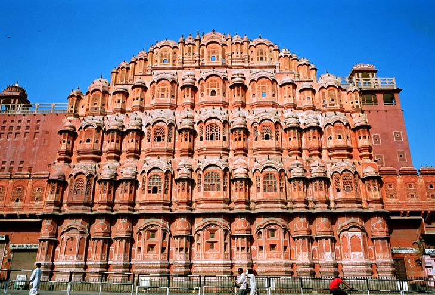
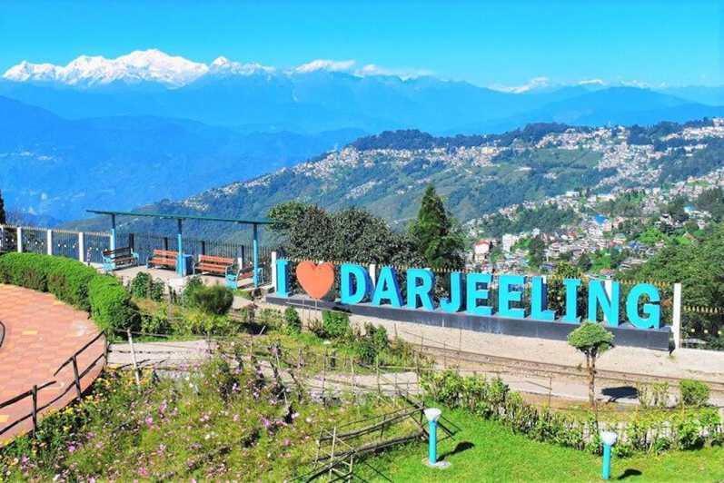

Lets look at random pictures! from www.geeksforgeeks.com
Jaipur, the capital city of Rajasthan, is a vibrant kaleidoscope of colors, culture, and history. Known as the Pink City, it is famous for its majestic forts.The iconic Hawa Mahal, with its intricate lattice work, stands as a symbol of the city's royal heritage. The majestic Amber Fort, perched atop a hilltop. Jaipur's bustling markets, such as Johari Bazaar and Bapu Bazaar, are a shopper's paradise, offering everything from colorful textiles and handicrafts to exquisite jewelry and traditional Rajasthani cuisine. Jaipur continues to enchant visitors from around the world.
Nestled on the western coast of India, Goa is renowned for its pristine beaches, vibrant nightlife, and rich Portuguese heritage. With its golden sands, azure waters, and swaying palm trees, Goa's beaches offer the perfect setting for relaxation and water sports. Beyond its beaches, Goa's colonial architecture, such as the Basilica of Bom Jesus and Se Cathedral, reflects its multicultural history. The state's vibrant nightlife, with its beachside shacks, nightclubs, and beach parties, adds to its allure, making it a favorite destination for both domestic and international tourists seeking sun, sand, and fun. With its laid-back vibe, stunning natural beauty, and vibrant cultural scene, Goa offers a unique and unforgettable experience for travelers seeking sun, sand, and a taste of paradise.

Tucked away in the eastern Himalayas, Darjeeling is a picturesque hill station known for its stunning tea gardens, panoramic views, and cool climate. Famous for its Darjeeling tea, the region's lush tea plantations carpet the hillsides, creating a mesmerizing landscape. The Darjeeling Himalayan Railway, a UNESCO World Heritage Site, From the summit of Tiger Hill, visitors can witness breathtaking sunrise views over the snow-capped peaks of Kanchenjunga, the third highest mountain in the world. Darjeeling's charming colonial architecture, vibrant Tibetan culture, and tranquil ambiance make it a haven for nature lovers and adventure seekers alike.
